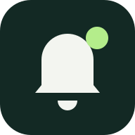

CODEX ALERTMacから離れていても
終わったら、
iPhoneへ。
Codexの完了と承認要求をお知らせ。
MacでCodexを開くと、再通知が止まります。
このiPhoneを登録
- ホーム画面に追加Safariの共有メニューから追加し、そのアイコンで開きます。iOS 16.4以降に対応。
- 通知を許可下のボタンで通知を有効にします。
- 登録ファイルをMacへ「登録ファイルを共有」からAirDropで送り、Macの補助ツールへ取り込みます。
準備しています…
公開鍵を設定
Macで表示した登録URLを、このホーム画面アプリで開けない場合に使います。
通知について
1分ごと、発生から最大30分。通知の内容は固定文と発生時刻だけです。自動審査される承認要求も含む場合があります。
Macが起動し、スリープせず、ネットワークにつながっている間に送信します。音はiPhoneの通知設定・集中モード・消音設定に従います。
この画面から再通知を止めることはできません。ロック解除したMacでCodexを前面にしてください。送信済みの通知は、その後に届く場合があります。